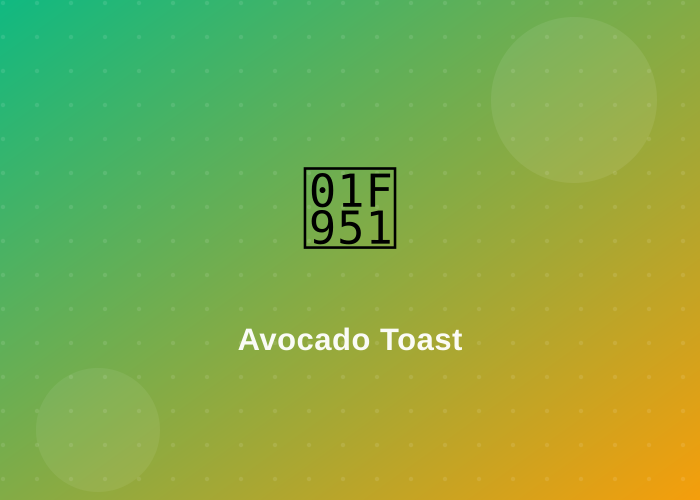
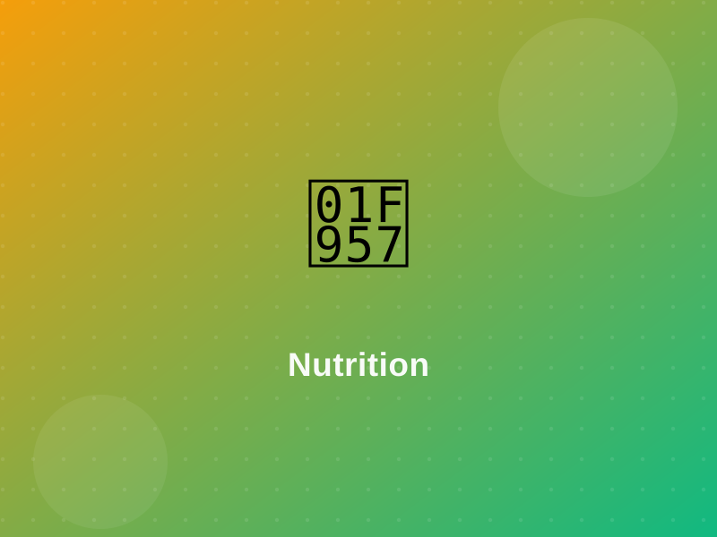
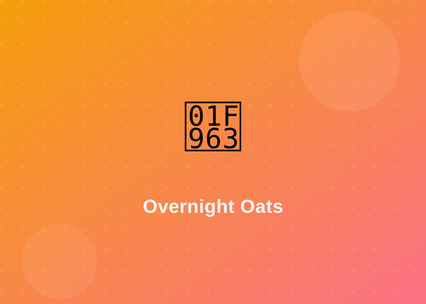
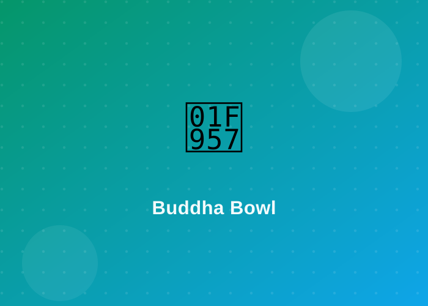
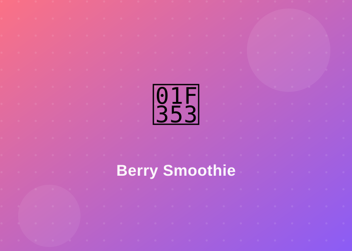

Avocado Toast
Creamy, filling and ready before the kettle boils. A brilliant breakfast or lazy lunch.
- 2 slices wholegrain bread
- 1 ripe avocado
- Lemon, chilli flakes, salt
- Optional: pumpkin seeds
Fuel your busy days and late nights with food that actually works for a tight budget and a packed schedule.
You don't need fancy meal plans or expensive supplements to eat well. The easiest habit to master is the balanced plate — a simple way to portion any meal by sight, no scales or apps required.
Picture your plate split into three parts. Fill it in these proportions and most of your nutrition takes care of itself, whether you're cooking at home or grabbing food between tasks.

Four go-to meals that are cheap, fast and forgiving. Swap ingredients for whatever's on offer — these are guidelines, not rules.

Creamy, filling and ready before the kettle boils. A brilliant breakfast or lazy lunch.

Prep it in a jar tonight, grab it tomorrow. Zero morning effort and no cooking at all.

A balanced plate in a bowl. Batch-cook the base and mix up the toppings all week.

Breakfast you can drink on the walk out the door, powered by cheap frozen fruit.
Small, sustainable changes beat strict diets every time. Pick one or two to start with.
Cook once, eat three times. Make a big pot of rice, pasta or curry at the weekend and portion it into containers so a healthy meal is always ready when deadlines hit.
Keep filling snacks within reach — nuts, fruit, yoghurt or wholegrain crackers. When something good is easy to grab, you're far less likely to raid the vending machine.
Tiredness and headaches are often just dehydration. Carry a refillable bottle and sip through the day — your focus through the day will thank you.
Check the per-100g column to compare products, and watch for hidden sugar and salt. It takes ten seconds and quickly makes you a savvier shopper.
Beans, lentils, eggs, oats and frozen veg are nutrition powerhouses for pennies. Shop the reduced shelf, buy own-brand and plan meals around what's cheap that week.
Coffee helps, but too much late in the day wrecks your sleep and next-day energy. Cap it at the afternoon and swap the extra cup for water or herbal tea.
Cheap, fast and genuinely tasty — for the days when you have five minutes and a tenner to last the week.
Balanced plates you can build for very little.
Breakfast
Lunch
Dinner
Only a kettle or microwave? You've still got options.
Most people walk around mildly dehydrated without realising it — and it shows up as tiredness, poor concentration and headaches. A good rule of thumb is around 2 litres a day, more when it's hot or you've been active.
Not sure what's right for you? Use the water intake calculator on our resources page to get a personalised daily target, then log your glasses on your dashboard to build the habit.